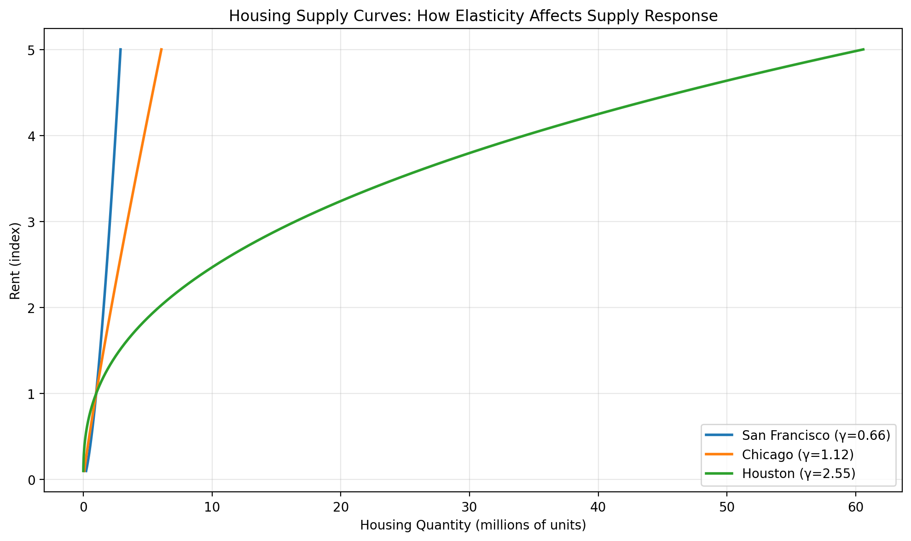

# Calculate housing supply at a given rent
h = housing_supply(rent=100, supply_shifter=1000, elasticity=2.0)
assert h == 1000 * (100**2.0)
# Calculate equilibrium rent where supply equals 1M population
r = equilibrium_rent(population=1_000_000, supply_shifter=1_000_000, elasticity=2.0)
assert np.isclose(r, 1.0) # Should be 1 when pop = shifter
# Verify equilibrium condition: H = L
h_eq = housing_supply(r, 1_000_000, 2.0)
assert np.isclose(h_eq, 1_000_000)Housing Supply
Housing supply functions, elasticity, and equilibrium rent determination
Where Do Rents Come From?
In the Rosen-Roback model, rents are determined by the housing market. Supply meets demand:
- Supply: Developers build housing when rents are high
- Demand: Workers need housing (assume 1 unit per worker)
- Equilibrium: Housing supply = Housing demand (= population)
The Housing Supply Function
Housing supply responds to rents:
\[H = S \cdot r^{\gamma}\]
where:
- \(H\) = housing units supplied
- \(S\) = supply shifter (land availability, construction costs)
- \(r\) = rent
- \(\gamma\) = supply elasticity
What is Supply Elasticity?
The elasticity \(\gamma\) measures how responsive supply is to price:
\[\gamma = \frac{\% \Delta H}{\% \Delta r}\]
Examples (from Saiz 2010):
- Houston: \(\gamma \approx 2.5\) (very elastic - flat land, few regulations)
- Chicago: \(\gamma \approx 1.1\) (moderate)
- Los Angeles: \(\gamma \approx 0.76\) (inelastic - geography + regulations)
- San Francisco: \(\gamma \approx 0.66\) (very inelastic - peninsula + strict zoning)
Why does elasticity vary?
- Geography: mountains, water bodies limit building
- Regulations: zoning, height limits, environmental reviews
- Land availability: room to sprawl vs. built-up
Equilibrium Rent
In equilibrium, housing supply equals population:
\[H = L\]
Solving for rent:
\[r = \left(\frac{L}{S}\right)^{1/\gamma}\]
Key insight: When supply is inelastic (low \(\gamma\)), the exponent \(1/\gamma\) is large, so rent increases sharply with population.
rent_elasticity_with_respect_to_population
rent_elasticity_with_respect_to_population (population:float, supply_shifter:float, elasticity:float)
Calculate the elasticity of rent with respect to population.
| Type | Details | |
|---|---|---|
| population | float | Current population |
| supply_shifter | float | Supply shifter parameter |
| elasticity | float | Supply elasticity (gamma) |
| Returns | float |
equilibrium_rent
equilibrium_rent (population:float, supply_shifter:float, elasticity:float)
Calculate equilibrium rent where housing supply equals population.
| Type | Details | |
|---|---|---|
| population | float | City population (= housing demand) |
| supply_shifter | float | Supply shifter parameter (S) |
| elasticity | float | Supply elasticity (gamma) |
| Returns | float |
housing_supply
housing_supply (rent:float, supply_shifter:float, elasticity:float)
Calculate housing supply given rent and supply parameters.
| Type | Details | |
|---|---|---|
| rent | float | Housing rent |
| supply_shifter | float | Supply shifter parameter (S) |
| elasticity | float | Supply elasticity (gamma) |
| Returns | float |
Examples:
The Power of Elasticity
Let’s see how different supply elasticities affect the rent response to population growth.
# Compare rent response across cities with different elasticities
supply_shifter = 1_000_000 # Calibrated so rent ≈ 1 at 1M population with gamma=2
base_population = 1_000_000
new_population = 1_500_000 # 50% population growth
# Empirical elasticities from Saiz (2010)
cities = [
("Houston", 2.55),
("Austin", 1.63),
("Chicago", 1.12),
("Los Angeles", 0.76),
("San Francisco", 0.66),
]
print("Effect of 50% Population Growth on Rents")
print("=" * 70)
print(f"{'City':<20} {'Elasticity (γ)':>15} {'Initial Rent':>12} {'New Rent':>12} {'% Increase':>12}")
print("-" * 70)
for city_name, gamma in cities:
initial_rent = equilibrium_rent(base_population, supply_shifter, gamma)
new_rent = equilibrium_rent(new_population, supply_shifter, gamma)
pct_increase = (new_rent / initial_rent - 1) * 100
print(f"{city_name:<20} {gamma:>15.2f} {initial_rent:>12.2f} {new_rent:>12.2f} {pct_increase:>11.1f}%")
print("-" * 70)
print("\nKey insight: Inelastic cities (low γ) see much larger rent increases!")Effect of 50% Population Growth on Rents
======================================================================
City Elasticity (γ) Initial Rent New Rent % Increase
----------------------------------------------------------------------
Houston 2.55 1.00 1.17 17.2%
Austin 1.63 1.00 1.28 28.2%
Chicago 1.12 1.00 1.44 43.6%
Los Angeles 0.76 1.00 1.70 70.5%
San Francisco 0.66 1.00 1.85 84.8%
----------------------------------------------------------------------
Key insight: Inelastic cities (low γ) see much larger rent increases!Rent Elasticity
The elasticity of rent with respect to population is simply \(1/\gamma\). This tells us how much rents respond to population changes.
print("Rent Elasticity with Respect to Population")
print("=" * 70)
print(f"{'City':<20} {'Supply Elasticity (γ)':>25} {'Rent Elasticity (1/γ)':>25}")
print("-" * 70)
for city_name, gamma in cities:
rent_elast = 1 / gamma
print(f"{city_name:<20} {gamma:>25.2f} {rent_elast:>25.2f}")
print("-" * 70)
print("\nInterpretation: In San Francisco (γ=0.66), a 1% population increase")
print(" causes a 1.5% rent increase.")
print(" In Houston (γ=2.55), the same 1% increase")
print(" causes only a 0.4% rent increase.")Rent Elasticity with Respect to Population
======================================================================
City Supply Elasticity (γ) Rent Elasticity (1/γ)
----------------------------------------------------------------------
Houston 2.55 0.39
Austin 1.63 0.61
Chicago 1.12 0.89
Los Angeles 0.76 1.32
San Francisco 0.66 1.52
----------------------------------------------------------------------
Interpretation: In San Francisco (γ=0.66), a 1% population increase
causes a 1.5% rent increase.
In Houston (γ=2.55), the same 1% increase
causes only a 0.4% rent increase.Tests
Visualizing Supply Curves
Let’s plot housing supply curves for different elasticities.
# This cell would create a visualization if matplotlib is available
try:
import matplotlib.pyplot as plt
rents = np.linspace(0.1, 5, 100)
supply_shifter = 1_000_000
fig, ax = plt.subplots(figsize=(10, 6))
for gamma, label in [(0.66, "San Francisco (γ=0.66)"), (1.12, "Chicago (γ=1.12)"), (2.55, "Houston (γ=2.55)")]:
quantities = [housing_supply(r, supply_shifter, gamma) for r in rents]
ax.plot(np.array(quantities) / 1e6, rents, label=label, linewidth=2)
ax.set_xlabel("Housing Quantity (millions of units)")
ax.set_ylabel("Rent (index)")
ax.set_title("Housing Supply Curves: How Elasticity Affects Supply Response")
ax.legend()
ax.grid(True, alpha=0.3)
plt.tight_layout()
plt.show()
except ImportError:
print("Matplotlib not available for visualization")
Key Insights
- Supply elasticity is crucial: It determines how much rents rise when population increases
- Inelastic supply → rent spikes: Cities with geographic or regulatory constraints see explosive rent growth
- Elastic supply → stable rents: Cities with room to build can absorb population growth
- Policy matters: Zoning and planning regulations directly affect \(\gamma\)
Why This Matters for Policy
If a productive city has inelastic housing supply:
- Workers face high rents
- Many workers are priced out
- They move to less productive cities
- National GDP falls
This is the mechanism behind the Hsieh-Moretti (2019) finding that housing constraints in high-productivity cities reduce U.S. GDP by 3.7-8.9%.